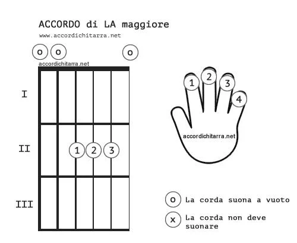

Gli accordi sono rappresentati su un diagramma che mostra le corde della chitarra e la posizione delle dita sulla tastiera.
Come Leggere un Diagramma di Accordo
Le linee verticali rappresentano le corde della chitarra, quella a sinistra è la più grave e quella a destra la più acuta.
Le linee orizzontali rappresentano i tasti, se non specificato affianco o sotto la posizione è al primo fret.
I numeri sulle corde indicano quali dita usare per premere le corde.
Le X indicano le corde da non suonare, i cerchi vuoti invece le corde da suonare senza premere nessun tasto.
La lettera indica la nota, e il numero 5-7-9 indica nota modificata dell'accordo.
La lettera dopo la nota indica come sono, se Maggiori (M), Minori (m), Aumentati (aug), Diminuiti (dim),Suspended (sus).

Errori e consigli:
All'inizio è normale sentire un piccolo fastidio nel polso e sulle punta delle dita, questo rimane finchè non sviluppi dei calli sulle dita, quindi è normale anche che si "strappi" un po' la pelle.
All'inizio è normale che non ricordi le posizioni degli accordi, riguardale e cerca di suonarle spesso così in poche settimane le ricorderai.
Dita: tieni le dita curve e tocca le corde con le punte delle dita, non tenere le dita piatte perchè vanno a toccare le altre corde, tieni le dita curve e premi mediamente forte.
Polso: tieni il polso in basso, tenere il polso troppo in alto mette le spalle in una posizione sbagliata. Il polso e le spalle devono essere in una posizione comoda e mobile.
Pollice: tieni il pollice dietro il manico e sul secondo dito o tra il primo e secondo dito.
Chiusura: tieni TUTTE le dita vicino ai tasti sempre e mantieni le dita in un grande MUCCHIO, quindi se suoni un accordo tieni le dita volanti attaccate o vicine a quelle usate.
Tasti: premi le note vicino al fret, non in mezzo, se hai tante note scivola un po indietro, all'inzio dovrai premere un pò di più per far si che tutte le note suonino.
No Bend: assicurati di non star curvando le note perchè le farà scordare.
No Toccare: assicurati che le altre dita o le dita che usi stiano toccando le altre corde e che il palmo della mano non tocchi il mi cantino.